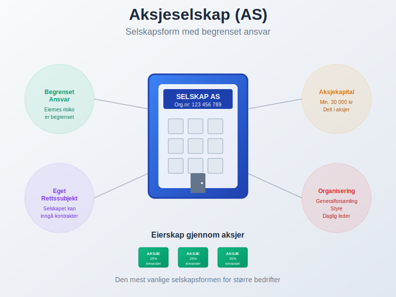
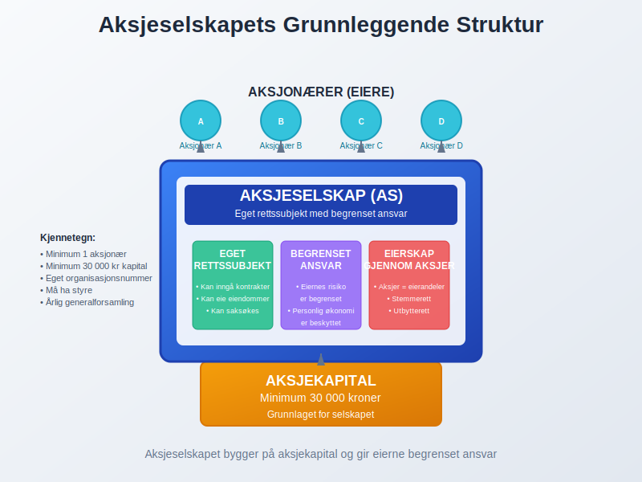
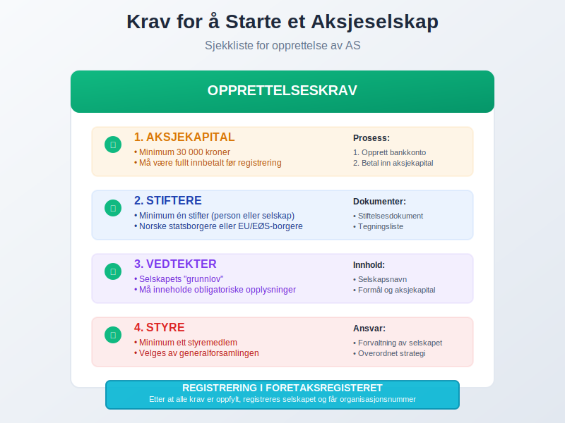

For en oversikt over ulike selskapsformer i Norge, se Selskapsform.
Et aksjeselskap (AS) er en foretaksform hvor eierskapet er delt inn i aksjer, og hvor hver eier mottar et aksjebevis som bevis på sitt eierskap. Dette er den mest vanlige selskapsformen for større bedrifter i Norge, og den gir eierne begrenset ansvar for selskapets forpliktelser.
En spesiell type aksjeselskap er allmennaksjeselskap (ASA), som er tilpasset større virksomheter og børsnotering. Les mer i vår guide om Hva er ASA? En Guide til Allmennaksjeselskap (ASA).
For en enkel steg-for-steg veiledning om hvordan du starter et AS, se Starte AS.
For informasjon om gebyr ved registrering, se Stiftelsesgebyr.

Hva Kjennetegner et Aksjeselskap?
Et aksjeselskap skiller seg fra andre selskapsformer på flere viktige måter:
Begrenset Ansvar
Den viktigste egenskapen ved et aksjeselskap er at aksjonærene har begrenset ansvar. Dette betyr at du som eier normalt ikke kan tape mer enn det du har investert i selskapet. Hvis selskapet går konkurs, er din personlige økonomi beskyttet.
Eget Rettssubjekt
Aksjeselskapet er et eget rettssubjekt og en juridisk person, helt adskilt fra eierne. Selskapet kan:
- Inngå kontrakter i eget navn
- Eie eiendommer og andre verdier
- Saksøke og bli saksøkt
- Ha egne rettigheter og forpliktelser
Aksjekapital
For å starte et aksjeselskap må du ha en minimum aksjekapital på 30 000 kroner. Denne kapitalen deles inn i aksjer som representerer eierandelene i selskapet.

Et alternativ til å stifte et nytt selskap er å kjøpe et hylleselskap, det vil si et ferdigregistrert aksjeselskap uten drift. Dette gir raskere oppstart, siden selskapet allerede er registrert. Les mer om hva et hylleselskap er i vår guide Hylleselskap.
Krav for å Starte et Aksjeselskap
Aksjeloven stiller flere krav til opprettelse av et aksjeselskap:
Minimum Aksjekapital
- 30 000 kroner i aksjekapital
- Kapitalen må være fullt innbetalt før registrering
- Kan bestå av penger eller andre verdier (tingsinnskudd)
Stiftere
- Minimum én stifter (kan være person eller selskap)
- Stifterne må tegne alle aksjene ved opprettelse
- Norske statsborgere eller EU/EØS-borgere kan være stiftere
Vedtekter
- Selskapet må ha vedtekter som fungerer som selskapets “grunnlov”
- Vedtektene må inneholde obligatoriske opplysninger som selskapsnavn, formål og aksjekapital
Styre
- Selskapet må ha minimum ett styremedlem
- Styret er ansvarlig for forvaltningen av selskapet
- Styremedlemmer velges av generalforsamlingen
- Styremedlemmer kan motta honorar for sitt arbeid
- Ansatte kan tilbys opsjonsavtaler som incentivordning

Organisering av et Aksjeselskap
Et aksjeselskap har en klar organisasjonsstruktur regulert av aksjeloven:
Generalforsamling
- Øverste organ i selskapet
- Alle aksjonærer har rett til å delta
- Treffer de viktigste beslutningene som valg av styre og godkjenning av årsregnskap
Styre
- Ledelsesorgan som forvalter selskapet
- Ansvarlig for den overordnede strategien og kontrollen
- Kan ansette daglig leder
Daglig Leder
- Operativ leder (ikke obligatorisk)
- Ansvarlig for den daglige driften
- Rapporterer til styret
- Fungerer ofte som forretningsfører med det daglige ansvaret for virksomheten
Fordeler med Aksjeselskap
Begrenset Ansvar
Som nevnt er den største fordelen at eiernes ansvar er begrenset til aksjekapitalen.
Tilgang til Kapital
- Enkelt å hente inn ny kapital ved å utstede nye aksjer
- Kan ha mange eiere uten kompliserte avtaler
- Mulighet for ulike aksjeklasser med forskjellige rettigheter
- Attraktivt for investorer som søker avkastning gjennom utbytte og kursstigning
- Investorer kan vurdere selskapets lønnsomhet gjennom egenkapitalrentabilitet (ROE)
Kontinuitet
- Selskapet eksisterer uavhengig av eierne
- Enkelt å overføre eierskap ved salg av aksjer
- Selskapet fortsetter selv om eiere dør eller trekker seg ut
- Aksjonæravtaler kan regulere overføring av eierskap
Skattefordeler
- Aksjonærmodellen gir skatteoptimale utbytter gjennom skjermingsfradrag
- Fritaksmetoden gir skattefritak for utbytte mellom selskaper
- Mulighet for strategisk utbytteutdeling innenfor maskimalt utbytte med optimalisering basert på aksjonærmodellens skjermingsfradrag
- Bedre muligheter for skatteplanlegging basert på marginalskatt
- Mulighet for aksjonærlån med markedsmessige vilkår
- For selskaper innen naturressurser kan grunnrenteskatt være relevant
- Landbruksselskaper kan dra nytte av jordbruksfradrag som tilkommer selskapet
For en komplett oversikt over alle skatteordninger som gjelder for aksjeselskap og aksjonærer, se vår Aksjonærmodellen - Komplett Guide til Norsk Aksjebeskatning.
Finansieringsmuligheter
- Egenfinansiering - Finansiering gjennom egenkapital fra eierne uten å skape gjeld
- Aksjonærer kan låne penger til selskapet for rask kapitalinnsprøytning
- Fleksibel finansiering uten å utvanne eierandelene
- Alternativ til tradisjonell bankfinansiering
- Moderne finansieringsmetoder som crowdfunding og crowdlending gir tilgang til kapital fra mange små investorer
- Inkubatorer tilbyr finansiering kombinert med mentorskap, nettverk og forretningsutvikling for oppstartsselskaper
Ulemper med Aksjeselskap
Kompleksitet
- Mer komplekse regler og krav enn enkle selskapsformer
- Krav til regnskap og rapportering
- Må følge aksjelovens bestemmelser
- Ansvar for MVA-rapportering - alle aksjeselskaper må registrere seg i MVA-registeret uavhengig av omsetning
- Les mer om MVA-plikt for aksjeselskaper
- Behov for strukturerte anskaffelsesprosesser for å håndtere innkjøp og leverandørforhold
- Spesielt komplekst for engroshandel med omfattende lagerstyring og leverandørforhold
- Mange aksjeselskaper velger derfor å bruke ARS (Autorisert Regnskapsførerselskap) for å sikre korrekt håndtering av alle regnskapsmessige og juridiske krav
Kostnader
- Høyere oppstartskostnader (minimum 30 000 kr i aksjekapital)
- Løpende kostnader til regnskap og revisjon
- Registreringsgebyrer
Offentlighet
- Informasjon om selskapet er offentlig tilgjengelig
- Alle aksjonærer registreres i det offentlige aksjonærregisteret gjennom aksjonærregisteroppgaven, og selskapet må selv føre en detaljert aksjeeierbok.
- Årsregnskap må leveres til myndighetene
- Mindre fleksibilitet enn personlige selskapsformer
Aksjeselskap vs. Andre Selskapsformer
For en detaljert sammenligning av alle organisasjonsformer og veiledning i valg av riktig selskapsform, se vår omfattende guide.
Enkeltpersonforetak
- Aksjeselskap: Begrenset ansvar, egen juridisk person
- Enkeltpersonforetak: Ubegrenset personlig ansvar, enklere struktur
Ansvarlig Selskap (ANS)
- Aksjeselskap: Eierne har begrenset ansvar
- ANS: Deltakerne har ubegrenset solidarisk ansvar
Allmennaksjeselskap (ASA)
- AS: Minimum 30 000 kr i aksjekapital, ikke børsnotert
- ASA: Minimum 1 million kr i aksjekapital, kan være børsnotert og må da publisere kvartalsrapporter
Praktiske Råd for Oppstart
Hvis du vurderer å starte et aksjeselskap:
- Utarbeid en forretningsplan: En grundig forretningsplan er essensielt for å definere virksomhetens mål, finansieringsbehov og strategier
- Vurder behovet: Er begrenset ansvar og tilgang til kapital viktig for din virksomhet?
- Planlegg kapitalen: Sørg for at du har mer enn minimum 30 000 kr tilgjengelig
- Få juridisk hjelp: Konsulter advokat eller regnskapsfører for vedtekter og opprettelse
- Velg riktig navn: Sjekk at ønsket selskapsnavn er tilgjengelig
- Planlegg organisering: Bestem hvem som skal være i styret og eventuelle daglig leder
Relaterte Begreper
For å forstå aksjeselskaper fullt ut, bør du også sette deg inn i:
- Aksjer - Eierandelene i selskapet
- Aksjekapital - Selskapets grunnleggende kapital
- Aksjeklasser - Ulike typer aksjer med forskjellige rettigheter
- Aksjespleis - Sammenslåing av aksjer for å øke kursen
- Aksjesplitt - Oppdeling av aksjer for å senke kursen
- Aksjeloven - Loven som regulerer aksjeselskaper
- Aksjonærregisteret - Offentlig register over alle aksjonærer
- Aksjonærregisteroppgave - Obligatorisk årlig rapportering av aksjonærinformasjon
- Aksjonærlån - Lån fra selskapet til aksjonærene
- Ansvarlig Selskap - Selskapsform med ubegrenset solidarisk ansvar
- Egenfinansiering - Finansiering gjennom egenkapital fra eierne
- Egenkapital - Eiernes netto formue i selskapet
- Egenkapitalrentabilitet - Måling av avkastning på egenkapital for investorer
- Holdingselskap - Spesialisert aksjeselskap som eier andre selskaper
- Juridisk Person - Grunnleggende konsept som forklarer hvorfor aksjeselskap har egen rettsevne
- Regnskap - Regnskapsføring for aksjeselskaper
- Aksjonæravtale - Skriftlig avtale mellom aksjonærer om eierstyring og rettigheter
Et aksjeselskap er en kraftig selskapsform som gir fleksibilitet og beskyttelse, men krever også grundig planlegging og forståelse av regelverket.